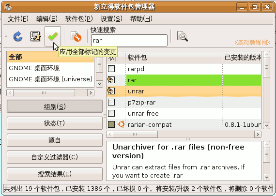

压缩软件基础教程
作者：TeliuTe 来源：基础教程网
六、Ubuntu 中使用 返回目录
在 Ubuntu 中也可以很方便地使用 rar，也可以使用 7-zip 压缩软件下面我们来看一个练习；
1、安装 rar 和 unrar
1）点菜单“系统－系统管理－新立得”，进入软件包管理器，
在快速搜索框里输入 rar，出来许多相关软件包；
2）找到 rar 和 unrar，瞄准分别点右键选“标记以便安装”；
3）然后点工具栏上的绿色打勾按钮，开始安装，稍等自动安装完成；

注意 rar 压缩包是共享软件，超过40天后，您就必须注册它“This program is shareware and you must register it after 40 days of use.”，可以用 7-zip来代替；
unrar 解压缩包是免费的，可以正常使用；
2、压缩文件
1）要压缩一个文件，在这个文件上点右键，选“创建归档文件”；
2）在出来的对话框右边，选择 .rar 格式，归档文件名中可以去掉扩展名，下面的密码框中还可以输入密码，
设定好以后，点右下角的“创建”按钮；
3、解压缩文件
1）在压缩包文件上点右键，选择“解压缩到此处”，就可以直接解压了；
2）如果要使用 7-zip 压缩软件，需要安装 p7zip-full 软件包，到新立得中搜索－标记－应用即可；
本节学习了在 ubuntu 中使用 rar 的基本方法，如果你成功地完成了练习，请继续学习；
本教程由86团学校TeliuTe制作|著作权所有
基础教程网：http://teliute.org/
美丽的校园……
转载和引用本站内容，请保留版权信息和本站链接。